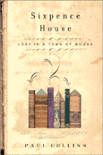

|

Sixpence House
Read previous BookPage interviews
|
So many books, so little time Bibliophile Paul Collins finds a town that shares his passion
INTERVIEW BY LINDA STANKARD If you're reading this, you probably love books to one degree or another. For Paul Collins, author of Sixpence House: Lost in a Town of Books, that love is taken to the nth degree. His passion for all things biblio led him to Hay-on-Wye, a small Welsh village on the Britain/Wales border with only 1,500 inhabitants and 40 antiquarian bookstores. "There are easily several million books secreted away in these stores," Collins explains, "and in outlying barns around the town; thousands of books for every man, woman, child and sheepdog." Leaving behind a comfortable cosmopolitan existence in San Francisco, Collins traveled with his wife Jennifer and their young son, Morgan, "across the pond" to buy a house, settle in the country and make "The Town of Books" their home. Sixpence House is the result of that journey, but it is more than a delightful travelogue of the family's adventure. It is the story of books themselves: how they get written, read, or not read, how they come into print and fall out of print, how they are made and how they are destroyed. And, last but not least, it is the story of how a young couple, their child in tow, became brave enough to follow their dreams. "I've always wanted to write," Collins says happily. "Ever since I was a kid, that's what I wanted to do, and I'm getting to do it. It's wonderful." Making life even more wonderful is a wife who has also been bitten by the book bug. "Jennifer is a painter," Paul explains, "but she writes as well. She's just finished a young adult book and is now to the point of looking for an agent." While a quaint, obscure little village crammed to the rooftops with books might seem the perfect place for a couple of artistic wordsmiths, the idyllic setting proves to be a difficult place to buy that "perfect" home. First of all, the buildings in Hay-on-Wye are old, and secondly, determining the condition of a home for sale is up to the buyer. This compels them to commission, and pay for, an engineering survey for any house they seriously consider purchasing. "In America, you can pretty much house hunt for free until you get to the point of signing on the dotted line," Collins notes, "but in Britain and Wales it gets very expensive very quickly." Tagging along from an armchair on this side of the pond, however, is great fun for the reader: "Heavy oak floorboards creak beneath our feet," Collins writes, "immediately to our left is a dark and crowded stairwell. This is a weighty structure, the sort of moany old house under constant compression by the very years themselves; it is not airy." Collins describes the kitchen of this particular house with his characteristic tongue-in-cheek humor as "distinctly of 1950 vintage; you half expect an Angry Young Man with a Yorkshire accent to step out and start yelling about working down in the bloody mines." In storybook fashion, as their money supply dwindles Collins gets a job working for the self-proclaimed "King of Hay," a man named Richard Booth, a book dealer and the owner of Hay Castle where Collins finds himself employed to sort through a veritable realm of books. The task is daunting, but the job does allow him to pursue one of his favorite pastimes: meandering from one idea to another. "I'm always going off on tangents," he admits. "I see something and I go, 'Oh, that looks interesting,' and in the process of tracking one story I end up finding five others. So I'm never lacking for material. But because of that, I have a hard time imagining myself writing a strictly single subject book. I've decided that's not what my talent is in. It's more in throwing myself out there in several directions and hoping that other people will find it interesting as well." His first book, Banvard's Folly: Thirteen People Who Didn't Change the World, capitalized on that same talent. "I guess I have a short attention span," he says, laughing. "Any one of those 13 people could have warranted a book, but I'd rather write about the 13 and let someone else write about one particular person." This meandering method works well for Sixpence House. It allows the author to wander off the path, stopping for an anecdote here, a poignant moment there; it allows him time to dust off a book for us, and let us glimpse the ideas and emotions of someone long-forgotten, their words, held in ink, still able to move our minds and hearts; it allows him to tell us stories within his story and to make a quiet, but undeniable statement about the power, the endurance, and the magic of books. But how does a bibliophile feel about computers? "I think computers are a blessing and a headache," Collins says. "I use computers and databases a lot in my historical research. They're a tremendous tool, but on the other hand, you have to know what you're looking for in the first place. And they're a very unstable medium." But with Sixpence House written and another book in the works, Paul Collins feels good about the future of his obsession and his livelihood. "Paper lasts for hundreds of years," he says confidently. "I think books are here to stay. Not only do they have an aesthetic pleasure to them, they're cheap, they're portable, and they last a long time." That should make any lover of books sleep a little more soundly tonight! Linda Stankard is a writer in New York. |